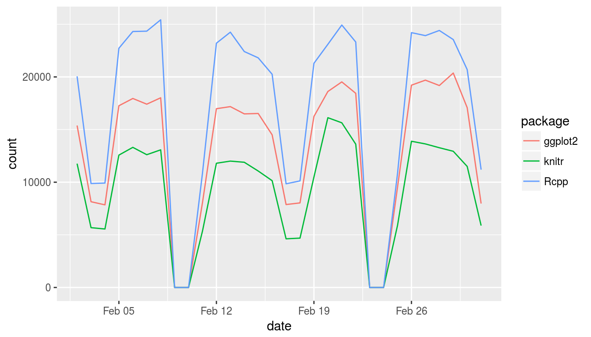
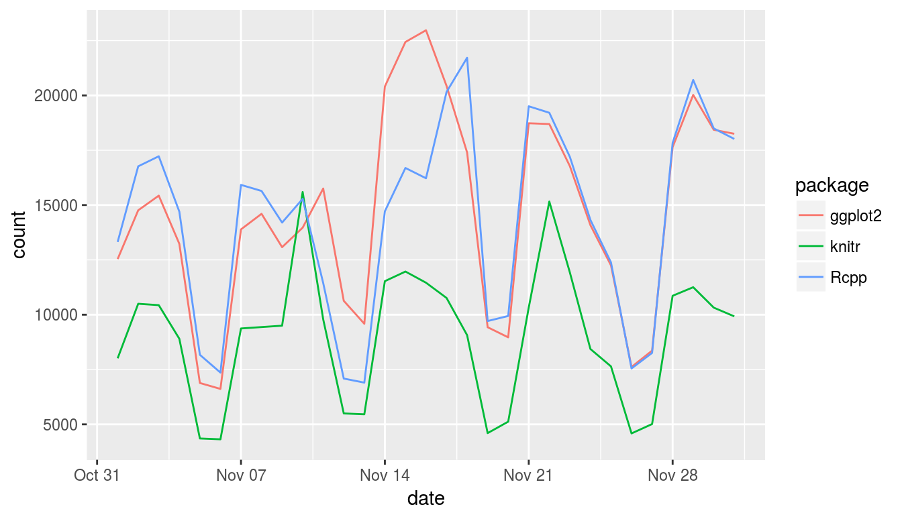

Example: R package download trends
Refresh your project without restarting from scratch.
William Michael Landau
2018-01-23
Overview
This small data analysis project explores some trends in R package downloads over time. The datasets are downloaded using the cranlogs package.
library(cranlogs)
cran_downloads(packages = "dplyr", when = "last-week")
## date count package
## 1 2018-01-16 14324 dplyr
## 2 2018-01-17 15188 dplyr
## 3 2018-01-18 15840 dplyr
## 4 2018-01-19 13117 dplyr
## 5 2018-01-20 6543 dplyr
## 6 2018-01-21 6818 dplyr
## 7 2018-01-22 15282 dplyrAbove, each count is the number of times dplyr was downloaded from the RStudio CRAN mirror on the given day. To stay up to date with the latest download statistics, we need to refresh the data frequently. With drake, we can bring all our work up to date without restarting everything from scratch.
Analysis
First, we load the required packages. Drake knows about the packages you install and load.
library(drake)
library(cranlogs)
library(ggplot2)
library(knitr)
library(plyr)We want to explore the daily downloads from these packages.
package_list <- c(
"knitr",
"Rcpp",
"ggplot2"
)We plan to use the cranlogs package. The data frames older and recent will contain the number of daily downloads for each package from the RStudio CRAN mirror.
data_plan <- drake_plan(
recent = cran_downloads(packages = package_list, when = "last-month"),
older = cran_downloads(
packages = package_list,
from = "2016-11-01",
to = "2016-12-01"
),
strings_in_dots = "literals"
)
data_plan
## target
## 1 recent
## 2 older
## command
## 1 cran_downloads(packages = package_list, when = "last-month")
## 2 cran_downloads(packages = package_list, from = "2016-11-01", \n to = "2016-12-01")We want to summarize each set of download statistics a couple different ways.
output_types <- drake_plan(
averages = make_my_table(dataset__),
plot = make_my_plot(dataset__)
)
output_types
## target command
## 1 averages make_my_table(dataset__)
## 2 plot make_my_plot(dataset__)We need to define functions to summarize and plot the data.
make_my_table <- function(downloads){
ddply(downloads, "package", function(package_downloads){
data.frame(mean_downloads = mean(package_downloads$count))
})
}
make_my_plot <- function(downloads){
ggplot(downloads) +
geom_line(aes(x = date, y = count, group = package, color = package))
}Below, the targets recent and older each take turns substituting the dataset__ wildcard. Thus, output_plan has four rows.
output_plan <- plan_analyses(
plan = output_types,
datasets = data_plan
)
output_plan
## target command
## 1 averages_recent make_my_table(recent)
## 2 averages_older make_my_table(older)
## 3 plot_recent make_my_plot(recent)
## 4 plot_older make_my_plot(older)We plan to weave the results together in a dynamic knitr report.
report_plan <- drake_plan(
report.md = knit("report.Rmd", quiet = TRUE),
file_targets = TRUE
)
report_plan
## target command
## 1 'report.md' knit('report.Rmd', quiet = TRUE)And we complete the workflow plan data frame by concatenating the results together. Drake analyzes the plan to figure out the dependency network, so row order does not matter.
whole_plan <- rbind(
data_plan,
output_plan,
report_plan
)
whole_plan
## target
## 1 recent
## 2 older
## 3 averages_recent
## 4 averages_older
## 5 plot_recent
## 6 plot_older
## 7 'report.md'
## command
## 1 cran_downloads(packages = package_list, when = "last-month")
## 2 cran_downloads(packages = package_list, from = "2016-11-01", \n to = "2016-12-01")
## 3 make_my_table(recent)
## 4 make_my_table(older)
## 5 make_my_plot(recent)
## 6 make_my_plot(older)
## 7 knit('report.Rmd', quiet = TRUE)The latest download data needs to be refreshed every day, so we use triggers to force recent to always build. For more on triggers, see the vignette on debugging and testing. Instead of triggers, we could have just made recent a global variable like package_list instead of a formal target in whole_plan.
whole_plan$trigger <- "any" # default trigger
whole_plan$trigger[whole_plan$target == "recent"] <- "always"
whole_plan
## target
## 1 recent
## 2 older
## 3 averages_recent
## 4 averages_older
## 5 plot_recent
## 6 plot_older
## 7 'report.md'
## command
## 1 cran_downloads(packages = package_list, when = "last-month")
## 2 cran_downloads(packages = package_list, from = "2016-11-01", \n to = "2016-12-01")
## 3 make_my_table(recent)
## 4 make_my_table(older)
## 5 make_my_plot(recent)
## 6 make_my_plot(older)
## 7 knit('report.Rmd', quiet = TRUE)
## trigger
## 1 always
## 2 any
## 3 any
## 4 any
## 5 any
## 6 any
## 7 anyNow, we run the project to download the data and analyze it. The results will be summarized in the knitted report, report.md, but you can also read the results directly from the cache.
make(whole_plan)
## cache /tmp/RtmpN3VCk8/articles/.drake
## connect 9 imports: report_plan, package_list, data_plan, make_my_table, make_...
## connect 7 targets: recent, older, averages_recent, averages_older, plot_recen...
## Loading required package: methods
## check 13 items: aes, count, cran_downloads, data.frame, date, ddply, geom_lin...
## check 2 items: make_my_plot, make_my_table
## check 2 items: older, recent
## target older
## target recent: trigger "always"
## check 4 items: averages_older, averages_recent, plot_older, plot_recent
## target averages_older
## target averages_recent
## target plot_older
## target plot_recent
## check 1 item: 'report.md'
## unload 2 items: recent, older
## target 'report.md'
## Used non-default triggers. Some targets may be not be up to date.
readd(averages_recent)
## cache /tmp/RtmpN3VCk8/articles/.drake
## package mean_downloads
## 1 ggplot2 10285.767
## 2 knitr 7959.867
## 3 Rcpp 12558.833
readd(averages_older)
## cache /tmp/RtmpN3VCk8/articles/.drake
## package mean_downloads
## 1 ggplot2 14641.29
## 2 knitr 9068.71
## 3 Rcpp 14408.06
readd(plot_recent)
## cache /tmp/RtmpN3VCk8/articles/.drake
readd(plot_older)
## cache /tmp/RtmpN3VCk8/articles/.drake
Because we used triggers, each make() rebuilds the recent target to get the latest download numbers for today. If the newly-downloaded data are the same as last time and nothing else changes, drake skips all the other targets.
make(whole_plan)
## cache /tmp/RtmpN3VCk8/articles/.drake
## Unloading targets from environment:
## averages_recent
## plot_older
## plot_recent
## averages_older
## connect 9 imports: report_plan, package_list, data_plan, make_my_table, make_...
## connect 7 targets: recent, older, averages_recent, averages_older, plot_recen...
## check 13 items: aes, count, cran_downloads, data.frame, date, ddply, geom_lin...
## check 2 items: make_my_plot, make_my_table
## check 2 items: older, recent
## check 2 items: averages_older, plot_older
## target recent: trigger "always"
## check 2 items: averages_recent, plot_recent
## check 1 item: 'report.md'
## Used non-default triggers. Some targets may be not be up to date.To visualize the build behavior, plot the dependency network. Target recent and everything depending on it is always out of date because of the "always" trigger. If you rerun the project tomorrow, the recent dataset will have shifted one day forward, so make() will refresh averages_recent, plot_recent, and 'report.md'. Targets averages_older and plot_older should be unaffected, so drake will skip them.
config <- drake_config(whole_plan)
vis_drake_graph(config)